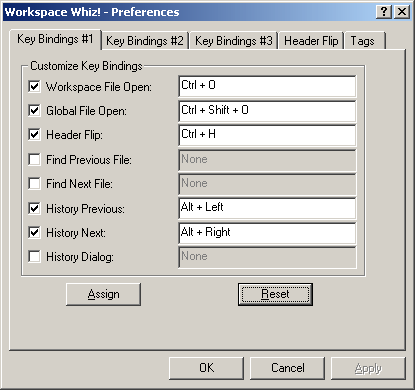
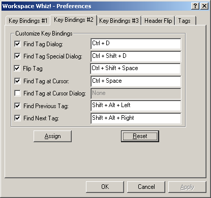
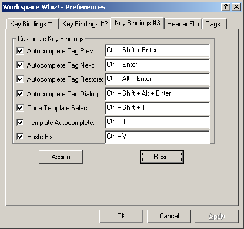

The Key Bindings dialogs let you assign keys to any of the commands provided by Workspace Whiz
Press the Assign key to assign the current set of commands. Press the Reset button to reset the current set of keyboard bindings to Workspace Whiz! defaults.
Note: Turning a key binding's check off does not remove the existing key binding.